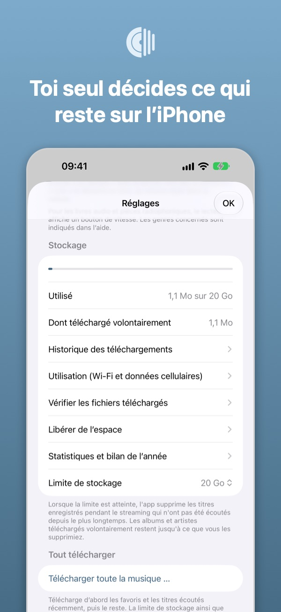
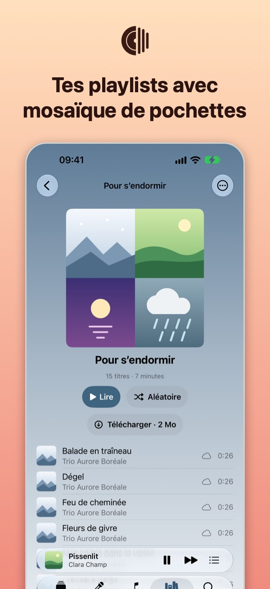
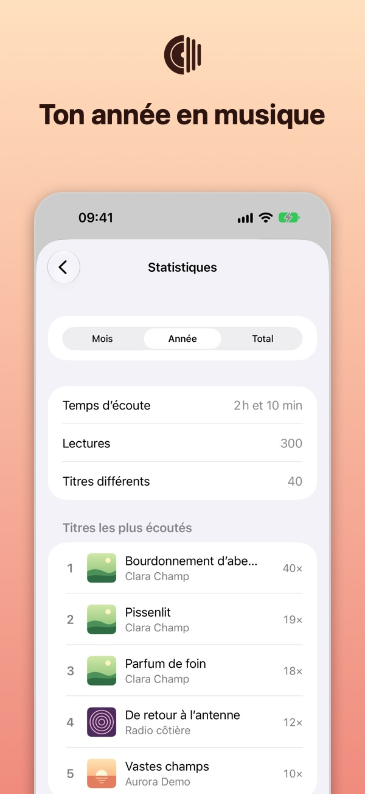
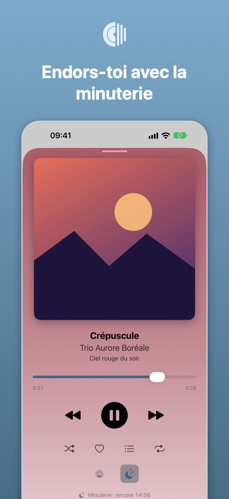
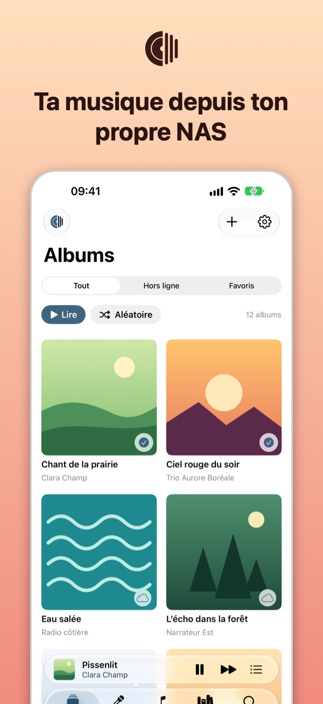
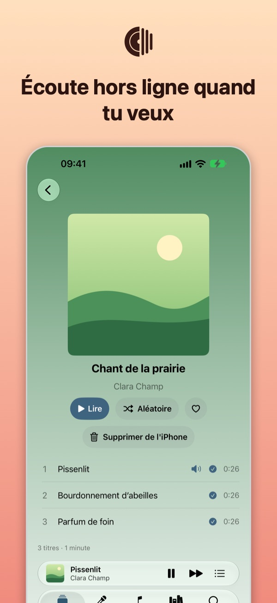
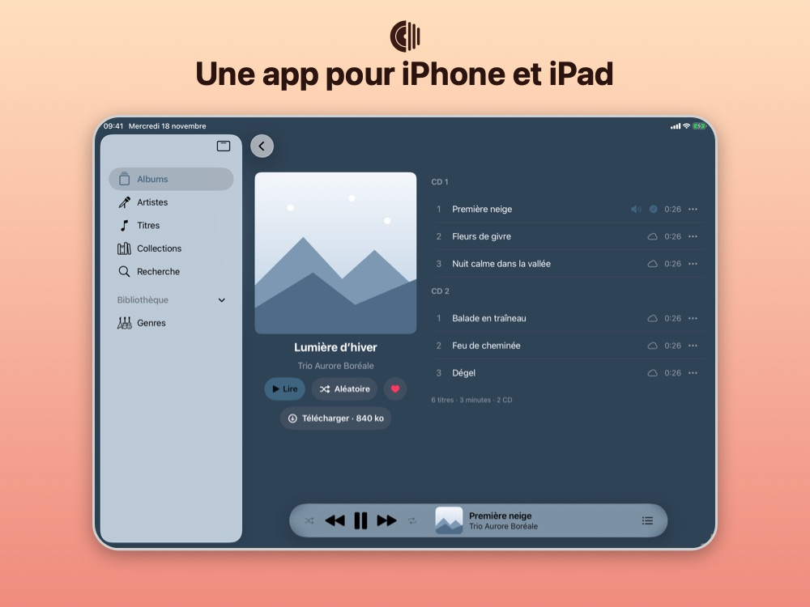
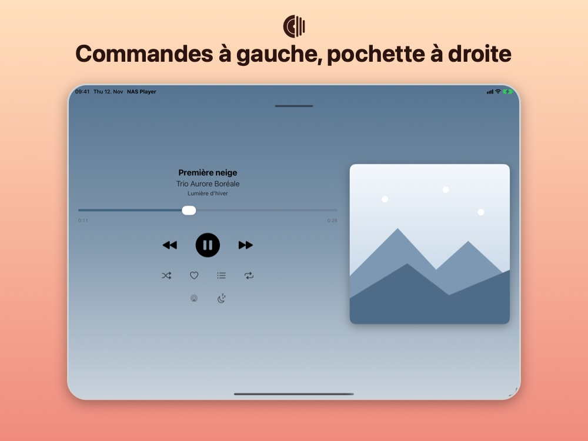
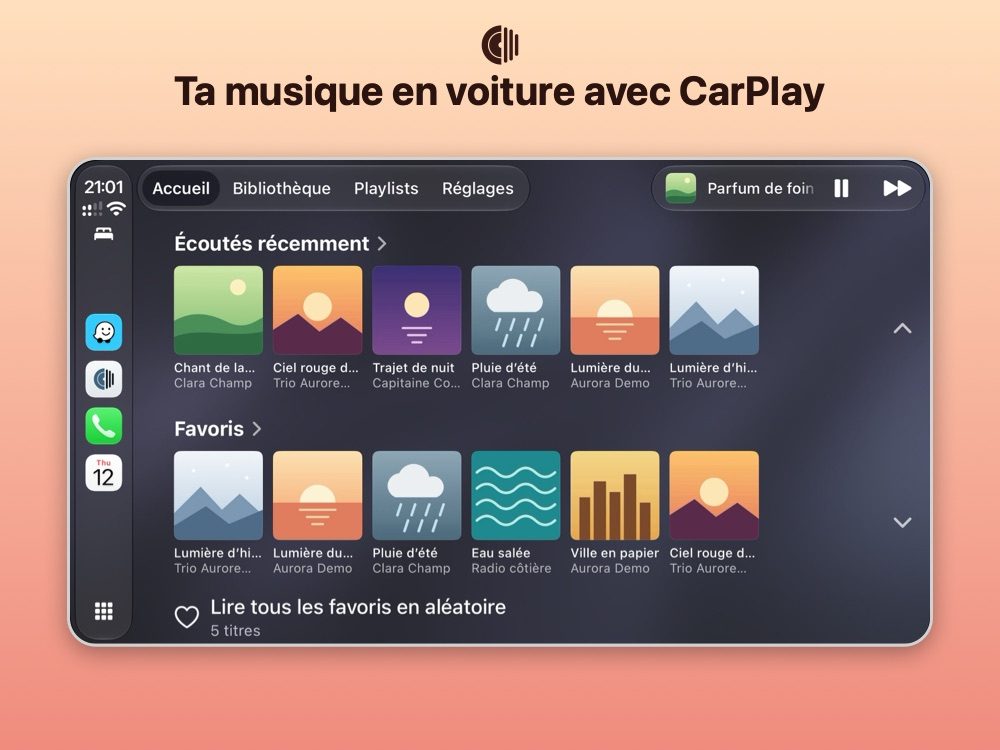

IPHONE
Toute votre bibliothèque dans la poche
Albums, téléchargement hors ligne, stockage, playlists, statistiques et minuterie sur l'iPhone.




Lit la musique de votre NAS Synology (Audio Station) sur iPhone et iPad : streaming, écoute hors ligne, CarPlay et Siri. Gratuit, sans pub ni suivi.
 Gratuit · sans achats intégrés
Gratuit · sans achats intégrés


Sur iPhone, sur iPad et dans la voiture : la même bibliothèque, les mêmes favoris, la même musique.
Albums, téléchargement hors ligne, stockage, playlists, statistiques et minuterie sur l'iPhone.




Une app pour iPhone et iPad : barre latérale, page d'album sur deux colonnes et un lecteur avec commandes à gauche et pochette à droite.


Choisissez dans Accueil, Bibliothèque, playlists et genres directement dans la voiture.

À la maison, l'app trouve votre NAS toute seule. En déplacement, utilisez une adresse https.
Téléchargez albums et artistes sur l'appareil volontairement. Les téléchargements continuent en arrière-plan.
À la maison, en déplacement ou sans réseau : ce qui est téléchargé joue partout, le reste arrive en streaming depuis votre NAS. Dans la voiture, vous choisissez avec CarPlay directement sur l'écran.
Un NAS Synology avec Audio Station accessible à une adresse https avec un certificat valide. Sans NAS, vous pouvez essayer l'app en mode démo.